第5课 学会求和函数
0、屏幕分成两半，一半范例，一半表格
1、打开wps，数一下几行几列，框选中单元格，
设置字体、24、颜色、居中
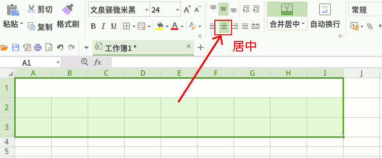
2、输入六门成绩的表头，瞄准分界线，拖宽一点；
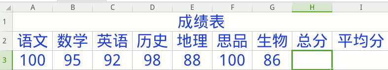
3、选中总分的单元格，H3，点编辑栏上的 fx
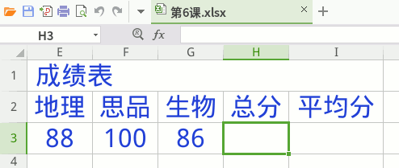
4、点“常用函数”，点 sum，点确定，记住sum是求和函数；
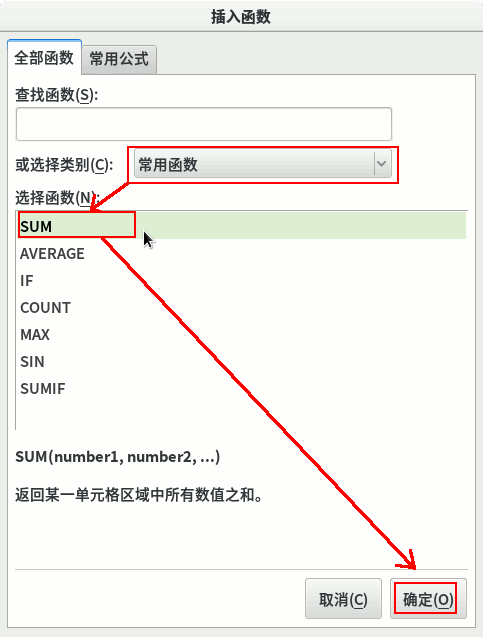
5、拖动标题栏，移到下边不碍事的位置
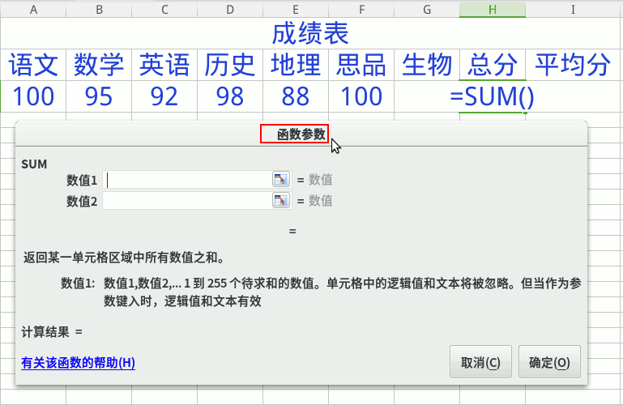
6、框选中七门成绩，生物别漏了，结果出来了，点确定；
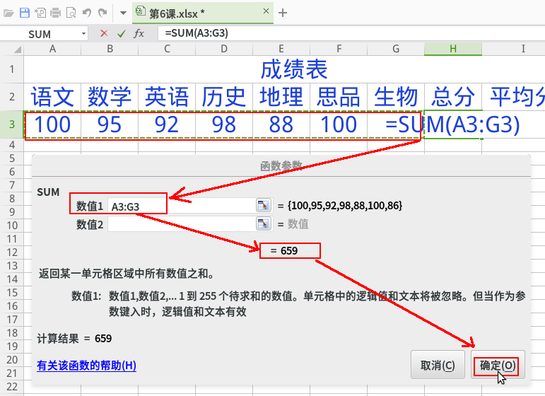
7、再选中平均分格子，I3，点 fx
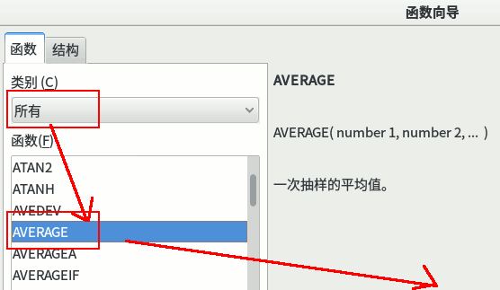
8、在函数对话框里，选择 AVERAGE，点确定，记住这个是平均分函数；
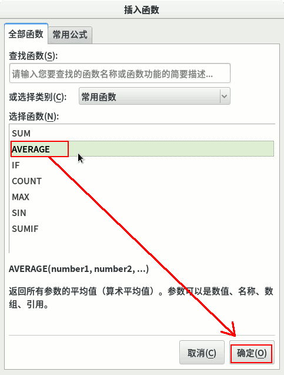
9、拖动标题栏，移到下边合适的位置；
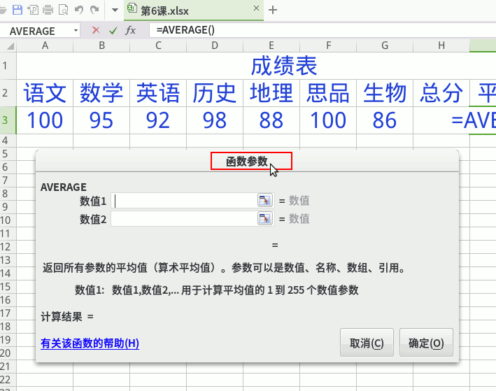
10、同样框选6门成绩，框到生物，看到中间出来分数，点“确定”
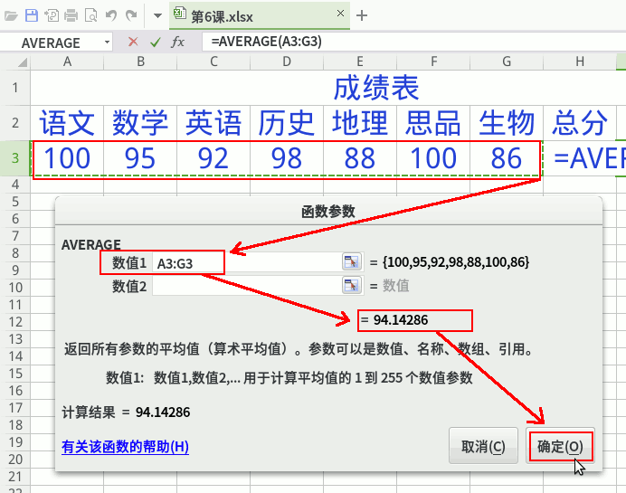
11、平均分设为1位小数；
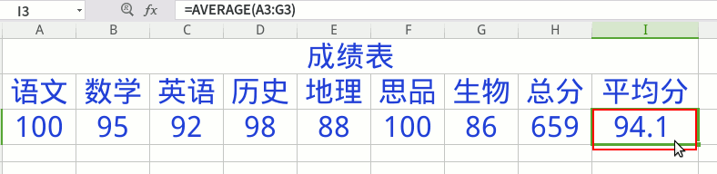
12、从第一列开始，自动填充到15行；
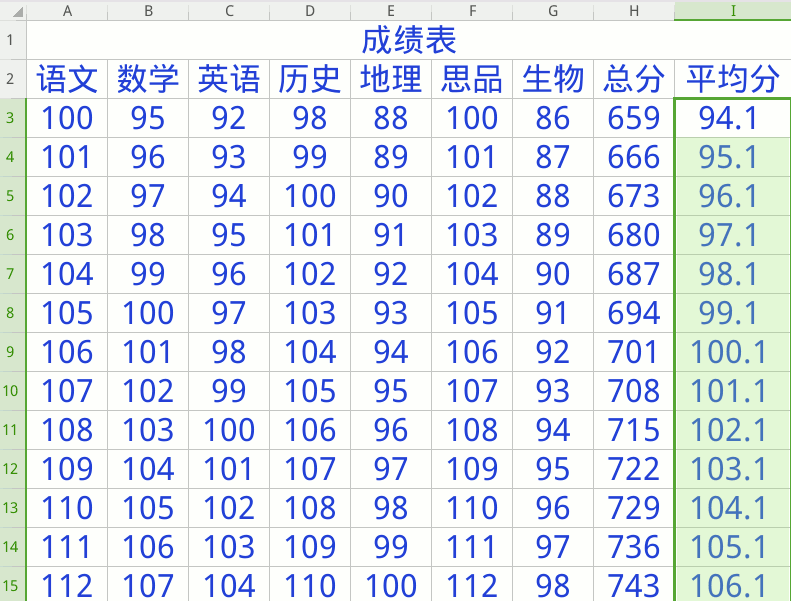
10、保存文件，文件名改成“第5课”，小数点后面不要动， 左边找到主文件夹，找到自己的文件夹，保存；
本节学习了的基础知识，如果你成功地完成了练习，请继续学习下一课内容；
返回目录 下一课
本教程由TeliuTe制作|著作权所有
基础教程网：http://teliute.org/
美丽的校园……
转载和引用本站内容，请保留作者和本站链接。